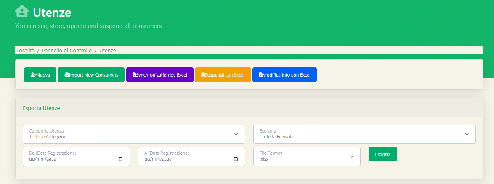
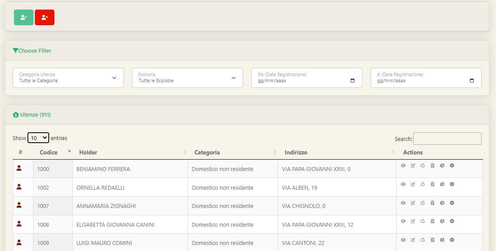
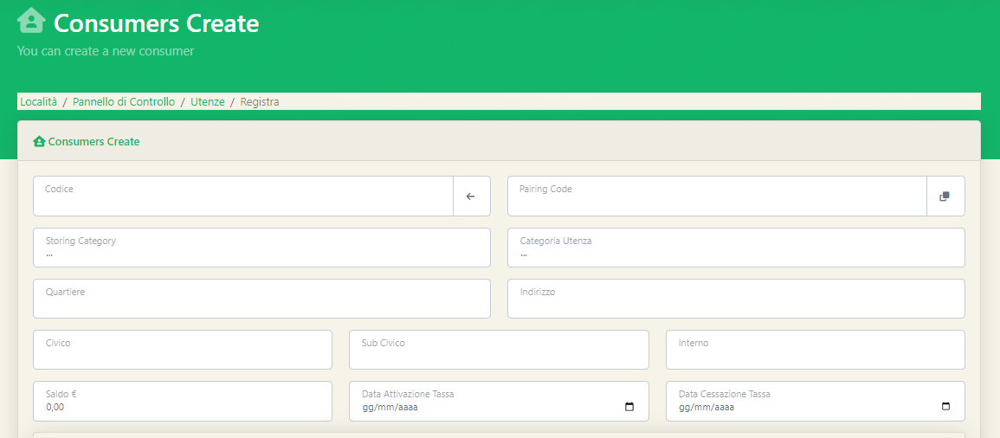
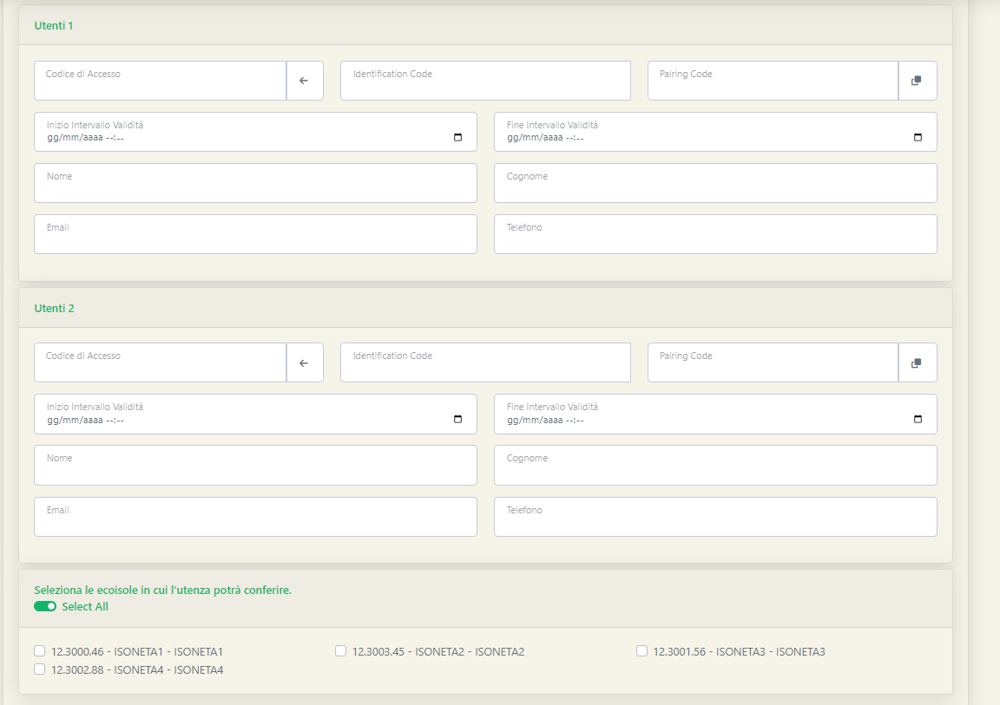
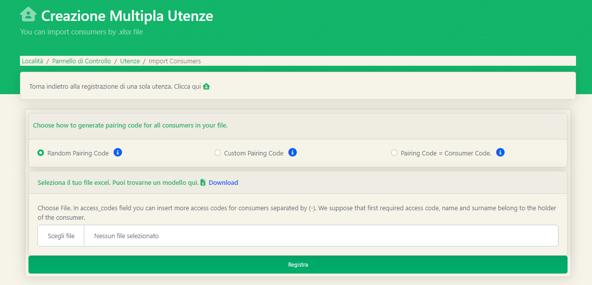
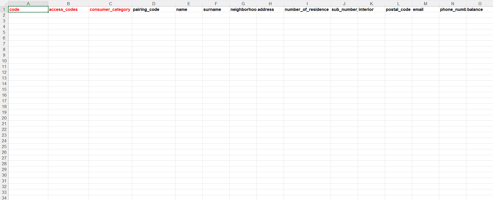

Una volta terminata la creazione delle categorie utenza, abbiamo il necessario per poter procedere al caricamento delle utenze all'interno della piattaforma. Nello specifico verrà illustrato il caricamento in due diverse strategie, quella manuale e quella massiva. Per procedere al caricamento delle utenze è necessario recarsi nella pagina Utenze dalla Sidebar. Una volta giunti nella pagina potremmo notare una prima parte della pagina dedicata ad operazioni da svolgere sulle utenze, come per esempio il caricamento, la sincronizzazione o l'esportazione;  mentre nella seconda parte della pagina potremmo notare invece la vera e propria tabella di visualizzazione delle utenze caricate nella piattaforma.  Per accedere alla creazione di una singola utenza l'amministratore dovrà fare click sul tasto verde Nuova.
Una volta aperta la pagina ci troveremo davanti alla possibilità di compilare diversi campi.  I primi campi che incontreremo, quelli al di sotto della sezione Consumers Create corrispondono ad una serie di informazioni dedicate strettamente all'utenza, dove per utenza si intende l'immobile, il nucleo familiare. A sostegno di questa tesi, nell'imamgine proposta è possibile vedere come siano richieste informazioni relative al quartiere di residenza,l'indirizzo o il civico. Andando in ordine, i primi 4 campi sono i più significativi e obbligatori:
Altre informazioni, come il saldo, la data attivazione tassa e data cessazione tassa, sono campi opzionali che servono per arricchire il quantitativo di informazioni a disposizione per una specifica utenza.
Nella parte inferiore della pagina invece potremmo notare la compilazione dei campi dedicati agli utenti, ovvero i componenti di un determinato nucleo familiare, e quindi, di una determinata utenza.  Ogni utenza può possedere più utenti al proprio interno; in questa pagina di registrazione viene proposta l'aggiunta di due utenti ad un'utenza, tuttavia è possibile aggiungerne anche di più. Per ciascun utente sarà obbligatorio indicare:
Scorrendo in fondo alla pagina potremmo ritrovare un'opzione già vista all'interna della sezione delle Storing Category, ovvero la possibilità di consentire o meno l'accesso ad una determinata ecoisola per quel singolo utente; l'accesso può essere regolato anche per i distributori di sacchetti qualora fossero presenti.
Terminata la compilazione di tutti i campi basterà fare click sul tasto verde Registra per aggiungere una nuova utenza alla piattaforma
Abbiamo visto precedentemente come caricare una singola utenza; tuttavia, in caso dovessimo caricare un elenco numeroso di Utenze l'operazione appena vista risulta piuttosto onerosa. Motivo per il quale Waper Web mette a disposizione una funzione di caricamento massivo basata sull'utilizzo di file excel o csv. Tornando nella schermata delle Utenze, cliccando l'apposito tasto dalla Sidebar, basterà recarsi sul tasto Import New Consumers e dal menù a tendina che verrà proposto selezionare o la voce .xlsx per file excel con intestazione o .csv per file privi di intestazione. Scelta la dovuta preferenza, l'amministratore si troverà davanti alla seguente finestra:  Le tre opzioni che vengono proposte:
La riga sottostante alla scelta appena espressa suggerisce di selezionare il proprio file excel o in alternativa di scaricare l'apposito modello. Il caricamento massivo mediante file excel richiede che i dati siano organizzati all'interno di un file excel opportunamente configurato (proprio il modello che può essere scaricato).  In tale modello possiamo notare le prime tre colonne di colore diverso dalle altre; tali colonne indicano i dati obbligatori ovvero codice utenza, codice di accesso all'ecoisola/distributore e la categoria utenza (non la storing category!). Tutti gli altri campi presenti nel modello excel indicano tutte le informazioni che abbiamo precedentemente descritto come per esempio: nome, cognome, indirizzo, civico,... .
Terminata la compilazione del file excel basterà tornare sul software e caricare il file appena compilato nell'apposita area vista precedentemente e premere il tasto verde Registra. Al termine della procedura di caricamento verrà inviata una mail all'indirizzo di posta elettronica dell'amministratore con il risultato dell'operazione appena eseguita.